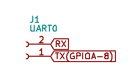
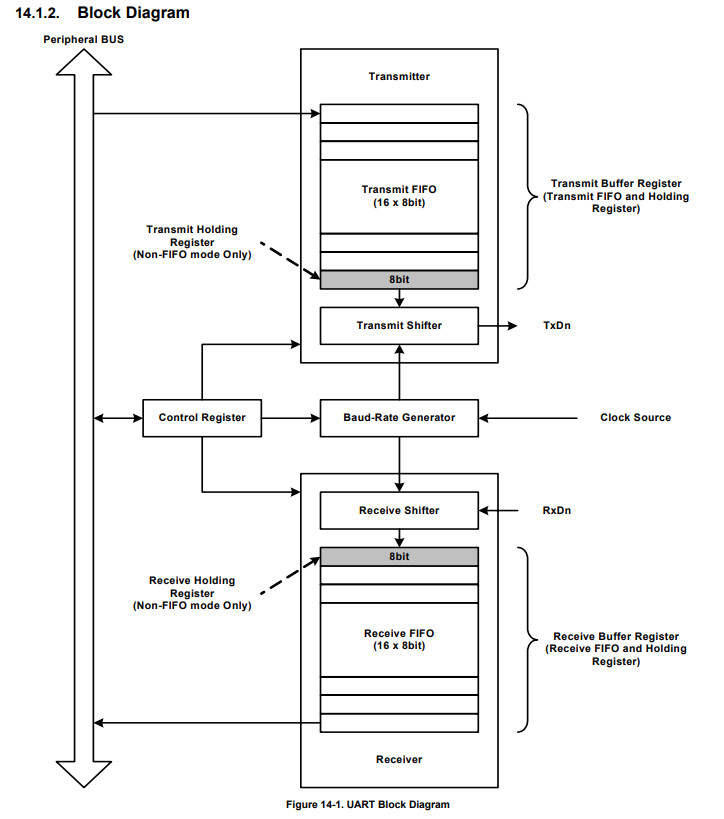
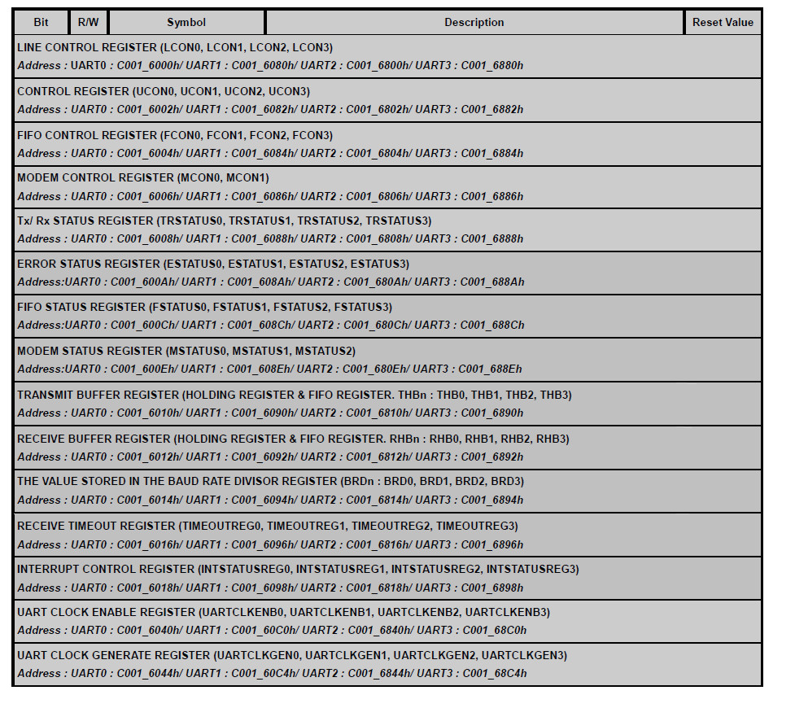
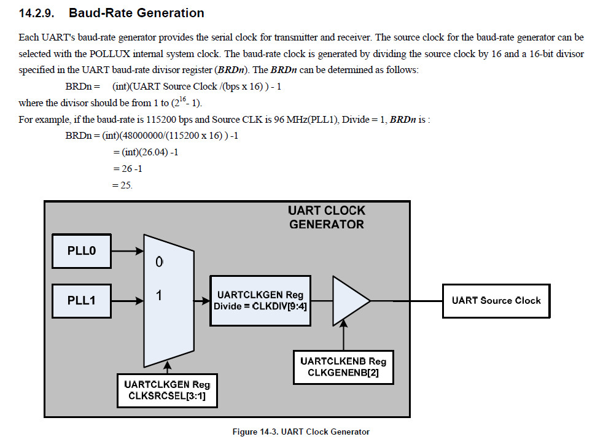
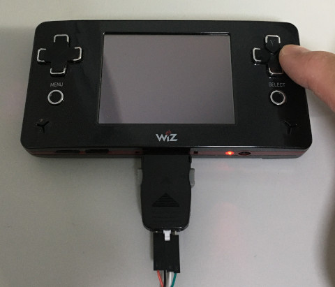

Steward
分享是一種喜悅、更是一種幸福
掌機 - GP2X Wiz - Assembly - UART
UART0_TX連接到GPIOA-8
UART0_RX則是有專屬接收腳位(不須配置)

UART架構

暫存器

Baudrate計算

使用UART開機模式時，Clock固定使用PLL1且速度為147.46MHz
UART clock = (PLL clock) / (Uart Clock Divisor) UARTCLKDIV = 40 UART clock = 147.46MHz / 40 = 3.6864MHz BDR = (3686400 / (115200 * 16)) - 1 = 1
main.s
.global _start
.equiv GPIOC_OUT, 0xc000a080
.equiv GPIOC_OUTENB, 0xc000a084
.equiv GPIOC_PAD, 0xc000a098
.equiv GPIOA_ALTFN0, 0xc000a020
.equiv UART_LCON0, 0xc0016000
.equiv UART_UCON0, 0xc0016002
.equiv UART_FCON0, 0xc0016004
.equiv UART_MCON0, 0xc0016006
.equiv UART_TRSTATUS0, 0xc0016008
.equiv UART_THB0, 0xc0016010
.equiv UART_BRD0, 0xc0016014
.equiv UART_CLKENB0, 0xc0016040
.equiv UART_CLKGEN0, 0xc0016044
.arm
.text
_start:
b reset
b .
b .
b .
b .
b .
b .
b .
reset:
ldr r0, =GPIOC_OUTENB
ldr r1, =(1 << 16)
str r1, [r0]
ldr r0, =GPIOA_ALTFN0
ldr r1, =(1 << 16)
str r1, [r0]
ldr r0, =UART_CLKENB0
ldr r1, [r0]
bic r1, #4
str r1, [r0]
ldr r0, =UART_LCON0
ldr r1, =0x83
strh r1, [r0]
ldr r0, =UART_UCON0
ldr r1, =5
strh r1, [r0]
ldr r0, =UART_FCON0
ldr r1, =6
strh r1, [r0]
ldr r0, =UART_MCON0
ldr r1, =0xc0
str r1, [r0]
ldr r0, =UART_BRD0
ldr r1, =1
strh r1, [r0]
ldr r0, =UART_CLKGEN0
ldr r1, =0x272
strh r1, [r0]
ldr r0, =UART_FCON0
ldr r1, =1
strh r1, [r0]
ldr r0, =UART_CLKENB0
ldr r1, [r0]
orr r1, #4
str r1, [r0]
ldr r0, =GPIOC_OUT
ldr r1, =(1 << 16)
str r1, [r0]
ldr r0, =GPIOC_PAD
0:
ldr r1, [r0]
tst r1, #(1 << 5)
bne 0b
ldr r0, =GPIOC_OUT
ldr r1, =~(1 << 16)
str r1, [r0]
ldr r0, =UART_THB0
ldr r2, =hello
ldr r3, =UART_TRSTATUS0
1:
ldr r1, [r3]
tst r1, #(1 << 1)
beq 1b
ldrb r1, [r2]
strb r1, [r0]
add r2, #1
cmp r1, #0
bne 1b
b .
.align
hello: .asciz "Hello, world!"
.end
完成
